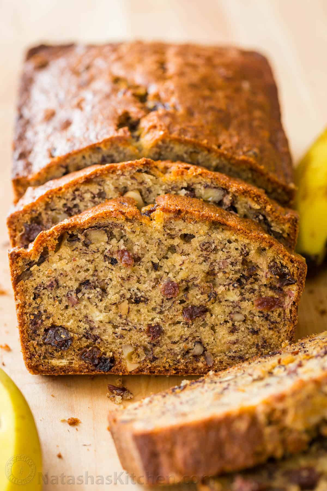

Home
Natasha's Kitchen Moist Banana Bread Recipe

Description
An easy and moist Banana Bread Recipe that is loaded with bananas, tangy-sweet
raisins, and toasted walnuts. This recipe has been perfected over the years by Natasha's husband who is known
for his Banana Bread. This recipe has garned hundreds of 5-star
reviews and a great way to use up overripe bananas.
Ingredients
- 3 very ripe bananas, (medium/large)
- 1/2 cup unsalted butter, (8 Tbsp) at room temperature
- 3/4 cup granulated sugar
- 2 large eggs, lightly beaten
- 1 1/2 cups all-purpose flour
- 1 tsp baking soda
- 1/2 tsp salt
- 1/2 tsp vanilla extract
- 1 cup walnuts
- 1/2 cup raisins
Steps
- Preheat the oven to 350°F. Grease and flour a bread loaf pan. Lightly roast walnuts on a skillet,
continuously stirring so they won’t burn. Coarsely chop and cool to room temperature.
- In a mixing bowl, cream together 8 Tbsp softened butter and 3/4 cup sugar (or honey if using honey).
- Mash bananas with a fork until the consistency of chunky applesauce and add them to the batter along with 2
eggs, mixing until blended.
- In a separate bowl, whisk together: 1 1/2 cups of flour, 1 tsp of baking soda and 1/2 tsp of salt then add
to batter.
- Add 1/2 tsp of vanilla extract and mix in chopped walnuts and raisins. Pour into prepared loaf pan. Bake at
350˚F for 55-60 min or until a toothpick inserted into the center comes out clean. Let banana bread rest for
10 min before transferring to a wire rack to cool.